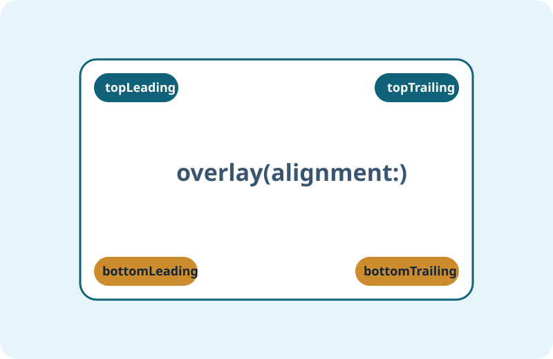

overlayで情報を重ねて伝える
overlayは「装飾」だけでなく、情報の文脈を保ったまま補助ラベルや状態表示を追加するための重要な手段です。
1. 基本文法（最小コード）
BasicText("通知")
.padding(12)
.background(.blue.opacity(0.15), in: Capsule())
.overlay(
Capsule().stroke(.blue, lineWidth: 1)
)ベースビューの上に別ビューを重ねるのがoverlayです。

2. 完成コード例（初心者向け）
Code LabBasic: 画像にラベルを重ねる
Image("course-card")
.resizable()
.scaledToFill()
.frame(height: 180)
.clipped()
.overlay(alignment: .bottomLeading) {
Text("UI設計")
.font(.caption.bold())
.padding(8)
.background(.black.opacity(0.5), in: Capsule())
.foregroundStyle(.white)
.padding(10)
}Intermediate: 複数バッジを重ねる
RoundedRectangle(cornerRadius: 16)
.fill(.white)
.frame(height: 190)
.overlay(alignment: .topTrailing) {
Text("NEW")
.font(.caption2.bold())
.padding(.horizontal, 8)
.padding(.vertical, 5)
.background(.orange, in: Capsule())
.padding(10)
}
.overlay(alignment: .bottomLeading) {
Text("更新: 3月")
.font(.caption)
.padding(.horizontal, 10)
.padding(.vertical, 6)
.background(.thinMaterial, in: Capsule())
.padding(10)
}3. 発展コードの読み方（中級入口）
ポイントalignment指定
top/bottomやleading/trailingを明示すると、画面幅変化に強い実装になります。
視認性の担保
背景に透過色を入れて、画像上でもテキストが読める状態を作ります。
4. つまずきやすいポイント
アンチパターン- overlayを重ねすぎて情報が散らかる。
- alignmentを指定せず、意図しない位置に表示される。
- 背景コントラスト不足で可読性が落ちる。
5. まとめチェックリスト
確認- overlayの基本構文を説明できる。
- alignmentを使って位置を制御できる。
- 可読性を維持した重ね表示ができる。